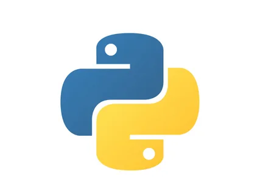
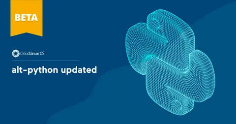

Краткая история Python


Язык программирования Python был создан Гвидо ван Россумом в конце 1980-х годов и впервые выпущен в 1991 году. Его целью было сделать код максимально читаемым и простым для изучения. Python быстро стал популярным благодаря своей лаконичности, универсальности и большому сообществу. Сегодня Python используется в науке о данных, веб-разработке, автоматизации, обучении и многих других областях.
- 1989 — Гвидо ван Россум начал разработку Python в рождественские каникулы.
- 1991 — опубликован первый релиз Python 0.9.0, уже с поддержкой классов, функций, исключений и базовых типов данных.
- 1994 — выходит Python 1.0, появляются модули, lambda, map, filter, reduce.
- 2000 — выход Python 2.0, появление сборщика мусора и поддержки Unicode.
- 2001 — основание Python Software Foundation.
- 2008 — релиз Python 3.0, несовместимый с Python 2, с акцентом на чистоту и современность синтаксиса.
- 2010-е — Python становится одним из самых популярных языков для науки о данных, машинного обучения и образования.
- 2020 — официальное завершение поддержки Python 2.
- 2023 — Python входит в тройку самых популярных языков по версии TIOBE и Stack Overflow.
Название языка происходит не от змеи, а от британского комедийного шоу "Monty Python's Flying Circus", любимого Гвидо ван Россумом. Python известен своей философией: "Простота лучше сложности" и "Явное лучше неявного". Язык активно развивается и поддерживается сообществом по всему миру.
Начало работы с Python
Python — это высокоуровневый интерпретируемый язык программирования, известный своей простотой и читаемостью. Давайте начнем с основ.
Ваша первая программа на Python
Традиционно первая программа на любом языке — это "Hello, World!". Попробуйте выполнить этот код: